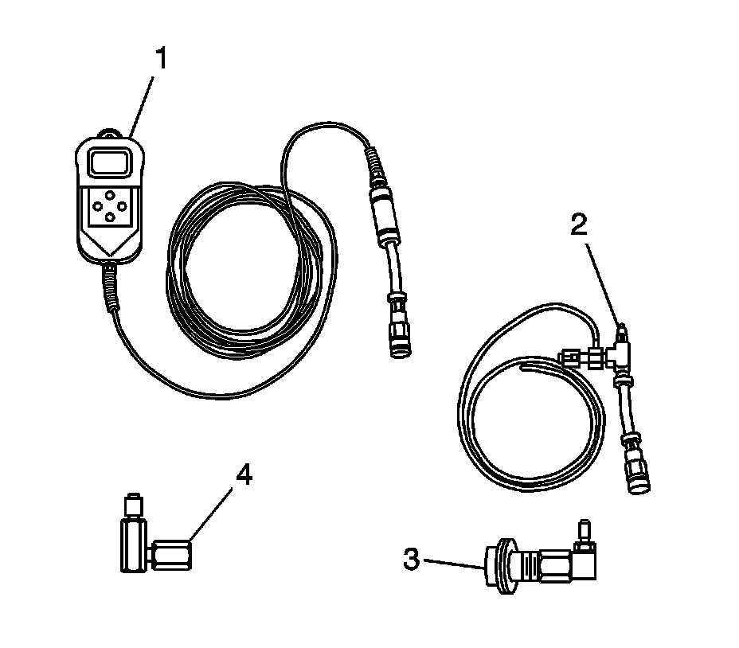

Fuel Pressure Gage Installation and Removal
FUEL PRESSURE GAGE INSTALLATION AND REMOVAL
TOOLS REQUIRED
CH-48027 Digital Pressure Gage
INSTALLATION PROCEDURE
CAUTION:
- Refer to Gasoline/Gasoline Vapors Caution.
- Remove the fuel tank cap and relieve the fuel system pressure before servicing the fuel system in order to reduce the risk of personal injury. After you relieve the fuel system pressure, a small amount of fuel may be released when servicing the fuel lines, the fuel injection pump, or the connections. In order to reduce the risk of personal injury, cover the fuel system components with a shop towel before disconnection. This will catch any fuel that may leak out. Place the towel in an approved container when the disconnection is complete.

1. Relieve the fuel system pressure. Refer to Fuel Pressure Relief.
2. Connect the CH-48027-1 (1) to the CH-48027-2 (2).
3. Remove the shop towel from around the fuel rail service port, and place in an approved gasoline container.
4. Perform any tests and/or diagnostics as needed. For the proper usage of the CH-48027, refer to the manufacture's directions.
REMOVAL PROCEDURE
1. Relieve the fuel system pressure, if required. Perform the following steps:
1. CAUTION: Wrap a shop towel around the fuel pressure connection in order to reduce the risk of fire and personal injury. The towel will absorb any fuel leakage that occurs during the connection of the fuel pressure gage. Place the towel in an approved container when the connection of the fuel pressure gage is complete.
Wrap a shop towel around the fuel rail service port.
2. Place the hose on the CH-48027-2 (2) into an approved gasoline container.
3. Open the valve on the CH-48027-2 (2) in order to bleed any fuel from the fuel rail.
4. Close the valve on the CH-48027-2 (2).
5. Remove the hose on the CH-48027-2 (2) from the approved gasoline container.
6. Remove the shop towel from around the fuel rail service port, and place in an approved gasoline container.
2. NOTE: Clean all of the following areas before performing any disconnections in order to avoid possible contamination in the system:
- The fuel pipe connections
- The hose connections
- The areas surrounding the connections
Disconnect the CH-48027-1 (1) from the CH-48027-2 (2).
3. Disconnect the CH-48027-2 (2) from the CH-48027-3 (4).
4. Disconnect the CH-48027-3 (4) from the fuel rail service port.
5. Install the fuel rail service port cap.
6. Tighten the fuel fill cap.